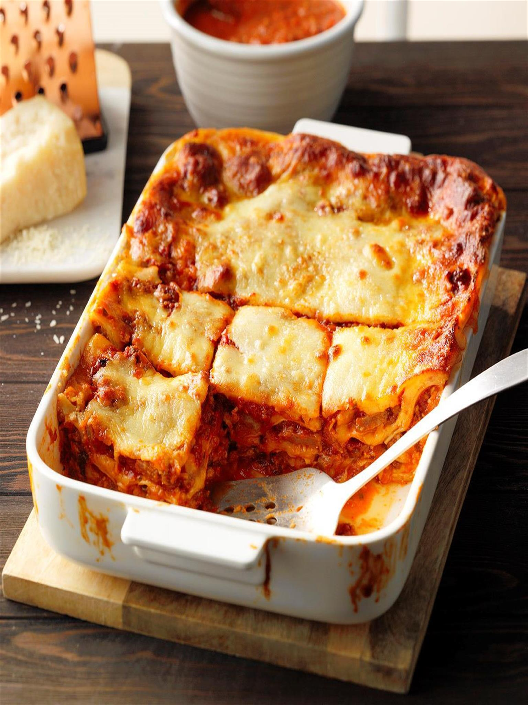

Lasagna Recipe

This Lasagna is perfect for muscles or even if you are someone who is trying to bulk up
It has 500 calories, 33g fat, 29g protein, 1185mg sodium, 27g carbs, 9g sugar, 3g fiber
Ingredients:
- Onion (chopped up)
- Olive Oil (2 tablespoons)
- Garlic Cloves (4 minced)
- Crushed Tomatoes in Puree (2 cans) and Tomato Paste (1 can)
- Water (6 cups)
- Basil (1 cup)
- Sugar (2 and 1/4 teaspoons)
- Salt (1 teaspoon)
- Italian Sausage (1 pound)
- Italian Sausage Links (4)
- Whole Milk Ricotta Cheese (1 carton)
- Mozzarella Cheese Shredded (8 cups)
- Beaten Egg (1)
- Dried basil (1/4 cup)
- No-cook Lasagna Noodles (12 sheets)
- Provalone Cheese (21 slices)
- Grated Parmesan Cheese (1/3 cup)
Directions
- On medium heat cook onions in olive oil for 4-5 minutes, add in garlic, after a minute pour in tomato paste and stir for 3-4 minutes,
next add in crushed tomatoes, water, basil, 2 teaspoons of sugar and salt, boil and let simmer for 1 hour, stirring periodically
- In the meantime, cook the sasuage in a skillet for 8-10 minutes until it changes from pink,
add into the sauce and simmer for around another hour
- Preheat oven to 350 degrees, on a baking sheet cook the sausage links for 35-40 minutes, then
let them cook and slice into 1/4 inch chunks
- Within a bowl mix ricotta cheese, 1 cup mozzarella cheese, beaten egg, dried basil and remaining 1/4 teaspoons of sugar
- In a baking dish with dimensions of 13x9 in. spread 2 cups of the sauce, put 4 noodles over sauce, add in a third of the ricotta spread,
7 provalone slices, third of the sausage chunks, and 1 1/2 cups of mozzarella cheese
- Now, repeat this 2 more times, using 1 cup of sauce per layer, spread with 2 cups of sauce, the rest of the sauce can be served on the side,
add in the last of the mozzarella cheese and parmesan cheese
-
Place in oven and bake, uncovered until golden brown for 60-65 minutes, let it cool for 10-15 minutes before serving,
Enjoy it with the meat sauce from earlier!
Back to top
Click here to go back for more recipes!